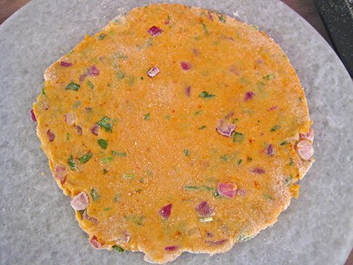

Missi Roti
gram flour and wheat flatbread with onion and ajwain, coarse and savoury off the tawa

Contains: milk, gluten
Checked against the ingredient list for ten allergens: milk, egg, fish, crustaceans, tree nuts, peanuts, sesame, mustard, soy and gluten. Brands vary, so read the label on anything new to you.
Ingredients
Quantities for 4.
- 200g Atta
- 100g Besan
- 1 medium, very finely chopped Onion
- 2, finely chopped Green Chilli
- 4 tbsp, chopped Coriander Leaves
- 1 tsp, crushed between the palms Ajwain
- 1 tsp Cumin Seeds
- 1 tbsp, crushed Kasuri Methioptional
- 1/4 tsp Turmericoptional
- 1/2 tsp Chilli Powderoptional
- 3 tbsp, plus more for smearing Ghee
- 180ml, lukewarm Water
- to taste Salt
Cookware
tawa, stovetop
Before you start
- Chop the onion as fine as you can manage. Coarse pieces tear the dough when you roll it.
- Rest the kneaded dough 20 minutes. Besan needs that time to hydrate or the rotis crack at the edges.
- Heat the tawa on medium for a full 5 minutes before the first roti. A cool tawa makes leathery missi roti.
Method
- Mix the atta, besan, salt, ajwain, cumin, turmeric and chilli powder in a wide bowl.
- Rub in 2 tbsp ghee until the flour holds its shape when squeezed in your fist.
- Add the onion, green chilli, coriander leaves and crushed kasuri methi and toss through.
- Add the lukewarm water a little at a time and knead 6-8 minutes to a soft, pliable dough, slightly stiffer than chapati dough.Onions release water as the dough rests, so start on the dry side. You can always add a splash more.
- Cover with a damp cloth and rest 20 minutes.
- Divide into 8, roll each into a ball and dust well with dry atta. Roll out to 16cm discs, a little thicker than a chapati.Roll with light, even pressure. Press hard and the onion pieces punch through the dough.
- Lay a roti on the hot tawa. When small bubbles appear across the surface, about 45 seconds, flip it.
- Cook the second side 1 minute until brown spots form, pressing the edges down with a folded cloth so it puffs.
- Flip once more, smear with ghee and cook 20 seconds a side until crisp at the rim.Missi roti is meant to be slightly crisp, not soft like a phulka. Give it that extra 20 seconds.
- Stack in a cloth-lined box and serve hot with white butter, dahi and pickle.
Storage
Best within the hour. Keeps 1 day wrapped in a cloth at room temperature; revive on a hot tawa for 30 seconds a side. The dough does not keep well once the onion is in it.
Nutrition Good estimate
Medium protein: 12 g a serving, 13% of the calories
| Per serving135 g | Per 100 g | |
|---|---|---|
| Calories | 381 kcal | 282 kcal |
| Protein | 12.1 g | 9 g |
| Carbohydrate | 58.3 g | 43 g |
| of which sugars | 4.7 g | 4 g |
| Fibre | 11.6 g | 8 g |
| Fat | 12.9 g | 10 g |
| of which saturated | 6.4 g | 5 g |
| of which unsaturated | 5.3 g | 4 g |
Estimated from raw ingredients using USDA FoodData Central.
Times, yields, allergens and nutrition are guidance. Use your own judgement on doneness and on storing. More in About.